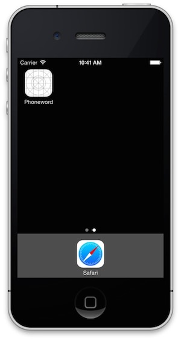
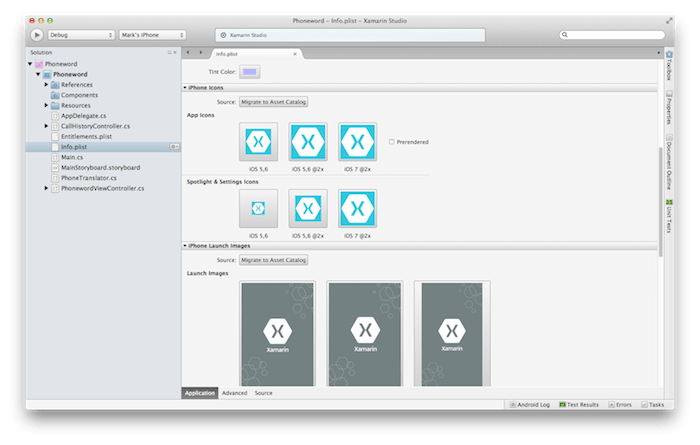

Exercise 5: Adding Final Touches
Duration
10 minutes
Lab Goals
The goal of this lab will be to add the final touches to our Phoneword application. This includes setting the Application Name, version, splash screen and all the required icons to make it look complete and professional.
This is a code-along lab, which should be done in tandem with an online instructor for Xamarin University. The step-by-step instructions are also provided below in order to run through this exercise independently to re-inforce the session takeaways.
Required Assets
Included with this exercise is a folder with resources that you will need in order to complete the lab. The folder name is Part 05 Resources. Make sure you have this folder before you begin. This folder also contains a starting solution with the Phoneword application with the second screen if you were unable to finish the prior exercise, or want to start with a fresh project.
Steps
Switch to your iOS device or the Simulator where you have been running PhoneWord. Click the circular Home Button (or use Command+Shift+H on the Simulator) to go to the home screen. Notice that our application name defaults to the name of our project, Phoneword. Notice as well that the icon is the default app icon for a new iOS application:
Our goal in this exercise is to do the final cleanup for the application by supplying icons, a splash screen and a better title for the application on the home screen.
Change the Application Name
- Switch to Xamarin Studio and open the Info.plist file.
- Under the section iOS Application Target change the Application Name to "Phone Word"
- While you are on this screen, go ahead and make sure the Bundle Identifier is all lower-case. This identifies your application both to Apple when you submit your application, but also to the device itself when you store settings. The convention is to use Reverse DNS Notation with your company name.
- Run the application to verify the name on the Home Screen has been changed.
Icons and Launch Images
Next, let's add some custom application icons and launch images to our project. Our finished project settings will look something like:
Open the info.plist file and scroll down until you can see the iPhone Icons section as shown below:

- Click on the placeholder for the 57 x 57 icon under App Icons. This will prompt you for an image to use for this icon.
- Navigate to Part 05 Resources/App Resources folder and double-click on icon-57.png to add it to our Phoneword project.
- In a similar way, click on each box representing an app icon and select the png file using the table below. The icon filenames match up to the required image sizes in each case so it should be fairly obvious which one to use.
- Scroll down if necessary until you see the iPhone Launch Images section, add the launch images from the Resources folder by clicking on each placeholder for the launch images and selecting the appropriate image. Here are the proper images for each one:
- Xamarin Studio has added all the icons into your Resources folder, and in some cases, renamed them images to match the convention used in iOS. Expand the resources node in the Solution Pad to see what was added. Notice how the "@2x" suffix was added to several of them to indicate that they should be used for the Retina-Display models.
For reference, the following table lists how names of the app icons and launch images were changed during the import process:
| Icon Image Size | Image Filename |
|---|---|
| 57x57 | icon-57.png |
| 114x114 | icon-114.png |
| 120x120 | icon-120.png |
| 29x29 | icon-29.png |
| 58x58 | icon-58.png |
| 80x80 | icon-80.png |
| Launch Image Size | Image Filename |
|---|---|
| 320x480 | Default.png |
| 640x960 (Retina) | Default@2x.png |
| 640x1136 (iPhone5) | Default-568h@2x.png |
| Original Name | Name in the Resources folder |
|---|---|
| icon-57.png | Icon.png |
| icon-114.png | Icon@2x.png |
| icon-120.png | Icon-60@2x.png |
| icon-29.png | Icon-Small.png |
| icon-58.png | Icon-Small@2x.png |
| icon-80.png | Icon-40@2x.png |
Testing the Application
Run the application a final time - as the application launches, it will briefly display the Xamarin launch image you have added:
If you switch out to the home screen, you will see that the custom icon is now being displayed. You can also see the smaller icon if you use Spotlight (swipe down on the home screen), or look in the Settings app which also uses the smaller image.